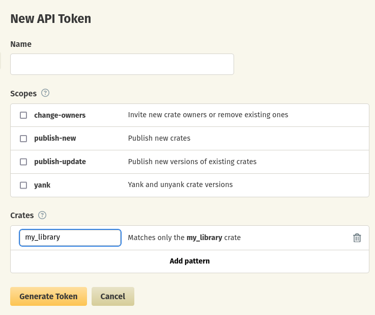

Introduction
What is Software Supply Chain Security?
The Software Supply Chain has been named as an analogy with the "physical" supply chain, that goes from raw materials to end consumers, through a system made of multiple links (factories, delivery, etc.).
A software supply chain is composed of the components, libraries, tools, and processes used to develop, build, and publish a software artifact.1
In the Rust context, it means more specifically the chain from the sources,
the dependencies (whether on crates.io or not),
build toolchain (rustc, cargo), CI/CD platforms, binary distribution, etc.
The software supply chain has been an increasingly frequent target in recent years, as it allows attacking well-secured systems by focusing on weaker links in their supply chain, or attacking multiple targets with a single entry point.
Diagram of the software supply chain risks (by the SLSA project)2:

About this guide
This guide is not a general introduction to the software supply chain security topic. To learn more about it, you can have a look at introductions by vendors like Red Hat or snyk, or the OpenSSF and SLSA projects.
This document is aimed at Rust developers, whether working on libraries in the ecosystem or on programs for end-users (and some parts of the guide are only applicable to one of these situations). It focuses on currently available tooling for the Rust ecosystem and provides actionable items whenever possible.
The checklist at the end gives an overview of the recommendations from the whole guide and helps to prioritize the different topics.
Software Supply Chain on Wikipedia (en) (under Creative Commons Attribution-ShareAlike License 3.0)
Supply chain Levels for Software Artifacts, Supply chain threats (under Community Specification License 1.0)
Manage dependencies
cargo makes it really easy to use dependencies, so the programs in the Rust ecosystem tend
to use a lot of them.
Despite the obvious advantages for the developers, this also comes with
specific risks.
Let's start by describing them, either direct or somewhere in the dependency tree.
The most common risk is the presence of vulnerabilities in one of the dependencies,
like Log4Shell in the Java log4j logging library,
containing an exploitable remote code execution.
The other main risk is an intentional attack introducing malicious behavior (advertising, attacking developer systems, compromisingdependencies.md build systems, introducing backdoor in final products, etc.) in the dependency tree. There are several possible kinds of malicious crates:
-
New crates which look like legitimate ones. Frequently using a name close to a widely used one (called typosquatting).
- Such an incident already happened with the rustdecimal
crate, masquerading as the legitimate
rust_decimalcrate. It contained a payload targeting Gitlab CI.
- Such an incident already happened with the rustdecimal
crate, masquerading as the legitimate
-
New versions of legitimate crates, either by stealing credentials or gaining publication access.
For now the Rust ecosystem has been relatively preserved for these attacks, but it's likely
linked to the lower visibility and popularity (compared to npm.org for example),
and not to intrinsic differences in the tooling or usage.
Choose dependencies
Minimize dependencies (DEPS-FEATURES)
The safest dependency is the one you don't include. Be careful though, the number of dependencies is not always a good measurement of the attack surface (several crates maintained by the same team don't really multiply the risk). To get an overview of people and organizations with publish access to your dependencies, you can use the cargo supply-chain tool:
The following individuals can publish updates for your dependencies:
1. alexcrichton via crates: bitflags, [...], web-sys
[...]
139. zrzka via crates: anes
Note: there may be outstanding publisher invitations. crates.io provides no way to list them.
See https://github.com/rust-lang/crates.io/issues/2868 for more info.
All members of the following teams can publish updates for your dependencies:
1. "github:rust-bus:maintainers" (https://github.com/rust-bus) via crates: [...]
[...]
35. "github:tower-rs:publish" (https://github.com/tower-rs) via crates: tower-service
Github teams are black boxes. It's impossible to get the member list without explicit permission.
In order to minimize the number of dependencies, and your attack surface, you can:
- Explore your dependency tree with
cargo tree/cargo supply-chainto see if you spot something to remove - Minimizing the dependency features. Crates tend to include a lot of features by default for convenience,
- but you can usually remove a part of the dependencies by disabling default features and only selecting the ones you actually need.
mylibrary = { version = "1", default-features = false, features = [ "required-feature" ] }
Assess a dependency (DEPS-ASSESS)
There is a very good checklist covering many aspects of crate evaluation published (and used internally) by Embark.
When considering adding a dependency, there are a few things
you can do to lower the different risks.
Auditing the code is always an option, but is not scalable, especially including all future version upgrades.
There are several initiatives intending to share the review
work in the community,
like cargo-crev and cargo-vet.
Note: When reviewing a crate, don't use the repository as a reference as it may diverge
from the content uploaded to crates.io.
Instead, you can download the crate (using URLs like: https://crates.io/api/v1/crates/serde/1.0.0/download),
use the source view on docs.rs (or an external service like Sourcegraph
(example),
used by cargo vet for reviews, which is more convenient for comparing versions).
Note: Be careful when opening untrusted crates in your editor/IDE, as even only opening it can run arbitrary code in procedural macros. Use a simple text editor (without LSP-like features) or make use of features like the restricted mode in VSCode.
To prevent potential vulnerabilities in memory management,
a focus on unsafe code is often needed in code reviews.
Tooling like cargo-geiger can help
track the use of unsafe code in dependencies.
Assess dependencies with cargo vet (DEPS-VET)
cargo vet is a project started by Mozilla
(and now also used by Google)
to formalize crate audits in an organization, and be able to share
these with the community.
As this topic is all a matter of trust, by default cargo vet works with local audits
you make yourselves.
You can also import audit results
from selected sources you trust, in the form of a git repository
URL. There is no centralized data source nor default trusted source.
[imports.mozilla]
url = "https://raw.githubusercontent.com/mozilla/supply-chain/main/audits.toml"
[imports.google]
url = "https://raw.githubusercontent.com/google/supply-chain/main/audits.toml"
You can also trust specific publishers. This lowers the level of scrutiny (as it does not protect against some threats) but allows focusing on more risky packages.
Maintain dependencies over time
Once you have chosen to use a dependency, you need to keep track of it over time.
Vulnerability and maintenance check (DEPS-VULNS)
You should also monitor for vulnerabilities and unmaintained crates using cargo audit or cargo deny regularly
(e.g. with a daily CI job).
GitHub's tooling
can also help
track security vulnerabilities in your project.
Regular updates (DEPS-UPDATES)
You should also try to stay up to date; this helps get bug fixes and improvements,
and also avoids using unmaintained versions,
ensuring to get easy access to security fixes in case of security vulnerability.
Use cargo outdated to show possible updates.
Maintaining a crate
This page contains the items related to crate maintenance, especially when you intend to make your crate public.
An obvious risk is a takeover of the crate, for example, on the crates.io repository, in order to publish malicious versions of your crate.
It is also important to help your consumers (library or binary program users)
best practices to secure publication and help crates consumers.
Include necessary information to make the builds consistent
Include Cargo.lock in sources (MAINTAIN-LOCK)
If you develop a binary program, it is important to commit the Cargo.lock file in your repository.
This will help keep track of the exact versions used and ensure consistent and (mostly) reproducible builds.
Include rust-toolchain.toml in sources (MAINTAIN-TOOLCHAIN)
In the same spirit, providing the Rust version to use in a rust-toolchain.toml file
in your binary program sources allows ensuring all builds will use a consistent toolchain version.
[toolchain]
channel = "1.71.0"
Fine-grained features (MAINTAIN-FEATURES)
Allow users of the crate to control transitive dependencies depending on their needs, using features. You can still define complete default features including broad use cases for convenience.
Maintaining a -sys crate building C/C++ code
Some crates which provide bindings for a C or C++ library (-sys crates) are also able to compile
the library statically into the Rust binary. It is convenient but should be
Provide flags allowing to select the behavior (MAINTAIN-SRCFLAG)
Users need to be able to be sure of the outcome of the build, whether they want to always
embed the library statically, or enforce dynamic linking and make the build fail
if it is missing.
A clear way to express this is to do dynamic linking by default
and provide a flag (vendored or similar) to choose to embed the library.
If the default behavior is to embed the library from the crate if missing on the system for convenience, then it should be documented clearly.
Use a dedicated crate if possible (MAINTAIN-SRCCRATE)
Instead of building the static library directly in the -sys crate, a good practice is
to use a dedicated crate for this purpose (like openssl-sys and openssl-src).
In this case, you can add the upstream version to the source crate version by using the build version defined in SemVer (defined as MAJOR.MINOR.PATCH+BUILD). For exemple, for openssl-src it gives 111.16.0+1.1.1l, 1.1.1l being the upstream packaged version.
This allows making the presence of the embedded library visible in the cargo tooling
(cargo tree, etc.), and more specifically to get security advisories for the embedded
component through the usual channels (cargo audit/deny).
This also allows
correctly documenting the upstream code license separately from the Rust crate.
Reporting vulnerabilities (MAINTAIN-VULNS)
If you find a vulnerability affecting your crate, reporting it to the RustSec advisory database will get your users warned if they use any kind of vulnerability detection on their dependencies. Reporting to RustSec only is enough, as the advisories will get imported by GitHub into their advisory own database (allowing alerts and pull requests by dependabot for example), and assigned a CVE when relevant.
Note: RustSec is only a database for (public) vulnerabilities affecting crates. For everything related to the Rust toolchain, infrastructure, etc. or if you need confidentiality, you need to contact the security response team as per the official security policy at security@rust-lang.org.
Publication on crates.io
When using crates.io for publishing your crates, you need to be careful about a few things.
GitHub account with 2FA enabled (MAINTAIN-CRATESIO2FA)
As crates.io uses GitHub as authentication layer, you should first properly secure your account using general best practices. In particular, make sure to have two-factor authentication layer configured (and avoid the SMS/Text message method).
crates.io token configuration (MAINTAIN-CRATESIOTKN)
Apart from the Web interface, the other way to interact with crates.io is through its
HTTP API,
especially through cargo commands (cargo publish, etc.)
that can run on the developer machine or on CI/CD systems, to automate publication.
These interactions are authenticated using a token created in the Web interface.
You should crate a unique token for each use-case, and give it a minimal set of permissions. Setting an expiration date allows forcing a regular rotation of tokens. For a one-shot operation, set a one-day validity or even revoke the token just after usage. If you had tokens crated before token scopes were introduced, you should delete them and recreate more restricted ones.
When using this token in an automated context, it should be stored securely (e.g.
as an encrypted secret in GitHub)
and passed as the
CARGO_REGISTRY_TOKEN environment variable.

Code security best practices (MAINTAIN-CODESEC)
Apply security best practices to your code and tests, like fuzzing, testing using miri, etc. You can learn more in the High Assurance Rust book.
Build for production
The build step is sometimes overlooked when it comes to software security, but is critical, as recent events like the SUNSPOT attack on SolarWinds build platform showed. Attacks can consist in tricking the build system into building from modified sources or inserting malicious software in the build environment.
Another important aspect is to allow users to get visibility over how the program was built, for example, by providing a precise list of included components, and ideally to allow the users the check that the produced artifacts actually match this information.
Build process
Build toolchain (BUILD-TOOLCHAIN)
rustup is a very convenient tool for managing Rust toolchains, but does not yet validate
signatures for the downloaded files. Depending on your requirements, it may be preferable to choose another installation method like
standalone installers
which allow you to validate signatures for downloaded files (or a Rust compiler provided by your Linux distribution).
Locked dependencies (BUILD-LOCKED)
When building for production, you should have a Cargo.lock file in the sources,
and ensure the build commands include the --locked flag.
This ensures dependencies' integrity (at least compared to when the lock file was committed), as
the Cargo.lock file contains a hash for each crate source, that is checked at build.
It also ensures the dependencies used for production build match what the source repository contains
(git tag, etc.).
If there is an inconsistency between the Cargo.lock
and Cargo.toml and the --locked flag is passed the build will fail
(while the lock file would be automatically updated without it).
Reproducible builds (BUILD-REPRODUCIBLE)
Reproducible builds designates an effort to make software re-buildable from sources with the exact same output, allowing anyone to check that the provided binaries are actually the product of their sources. This requires the build process to be deterministic.
It is currently possible to make reproducible builds in Rust, but it requires
some actions to remove build-time absolute paths from the binaries
(which are used in debug and panic messages).
This also leaks the absolute path of the files on the build system which may not be desirable.
To remove them, you need to pass the
--remap-path-prefix
option to rustc.
When using cargo, you can use the RUSTFLAGS environment variable, with something like:
RUSTFLAGS="--remap-path-prefix /path/to/build=/static-placeholder" cargo build --release
Or use a config.toml file for cargo with:
[build]
rustflags = ["--remap-path-prefix /path/to/build=/static-placeholder"]
You can pass the option multiple times (and, when multiple re-mappings are given and several of them match, the last matching one is applied). This process will become more straightforward once the RFC 3127 gets implemented in cargo.
Sandboxed builds (BUILD-ISOLATED)
As building Rust code runs arbitrary code locally (procedural macros and build.rs),
the build environment should be protected against attacks that could lead to persisting malicious software in
the build environment.
To do so, the build environment should be ephemeral and isolated (in a dedicated container, or -even better- a VM).
Embed dependency list in binaries (BUILD-AUDITABLE)
For traceability, it is useful to be able to get the list of dependencies from a build binary.
This allows, for example, auditing for known vulnerability directly on the binary files.
This is not done by default in Rust builds,
but you can use cargo auditable to include this information.
cargo auditable build --release
You can then see the embedded data with rust-audit-info:
$ rust-audit-info my_program | jq
{
"packages": [
{
"name": "aho-corasick",
"version": "0.7.20",
"source": "registry",
"dependencies": [
83
],
"features": [
"default",
"std"
]
}
# [...]
}
Warning: Due to the way some -sys crate work, some C/C++ native
library may be included in the binary but not visible in the embedded data.
Signature (BUILD-SIGN)
There is no specific tooling for signing Rust binaires at the moment, but common approaches can apply You can, for example, use a GPG-based signature.
There is also an open pre-RFC proposing to use sigstore for signing and verifying crates (topic on IRLO).
Software Bill Of Materials (a.k.a. SBOM) (BUILD-SBOM)
Software Bills Of Materials for Rust programs usually need to be created from the sources (as the binaries don't contain enough information).
Warning: Due to the way some -sys crate work, some C/C++ native
library may be included in the binary but not visible in the
SBOM.
There are available tooling for the two most common SBOM formats in the open-source ecosystems, SPDX and CycloneDX. Choosing a SBOM format is up to you (they should be somehow interoperable).
CycloneDX with cargo-cyclonedx
There is an official CycloneDX cargo subcommand to generate a SBOM
from a Rust project source, cargo-cyclonedx
# Produced a `bom.cdx.json` files
cargo cyclonedx --all --format json --output-cdx
It understands cargo workspaces and produces a JSON (or XML) file in the current directory.
To aggregate several files, validate or sign them, you can use the cyclonedx-cli.
cyclonedx merge --input-files *.json --output-file myprogram.cdx.json
SPDX and CycloneDX with cargo-sbom
There is a cargo subcommand available to generate an SPDX or CycloneDX SBOM from a Rust project source,
cargo-sbom.
# SPDX output (default)
cargo sbom > sbom.spdx.json
# CycloneDX output
cargo sbom --output-format cyclone_dx_json_1_4 > sbom.cdx.json
Running in production
In this section, we will see what we can do to track known vulnerabilities in Rust programs.
It won't cover generic deployment security as there are numerous options (containers, Windows msi/exe installers, Linux rpm/dpkg/etc. packages, etc.) but you should make sure you can verify that deployed artifacts' source and integrity (various artifact signature mechanisms can help).
Audit binaries
Crates
cargo audit has some capacities
to audit Rust binaries for known
vulnerabilities in their dependencies.
It has two operation modes in this context:
- If the binary was build using
cargo-auditable, it will audit for known vulnerabilities in the embedded dependency list. - If not, it will audit for known vulnerabilities in a dependency list extracted from panic messages.
- This is incomplete as not all crates include panics.
- Depending on the compilation options, panic messages may not be available at all.

You can also use more generic tools like trivy which is able to look for
known vulnerabilities in Rust binaries by using the same dependency list built by cargo-auditable.
$ trivy image --security-checks vuln docker-image
2022-08-15T11:32:03.923+0300 INFO Vulnerability scanning is enabled
2022-08-15T11:32:05.031+0300 INFO Number of language-specific files: 1
2022-08-15T11:32:05.032+0300 INFO Detecting rust-binary vulnerabilities...
your_binary (rust-binary)
=========================
Total: 1 (UNKNOWN: 0, LOW: 0, MEDIUM: 0, HIGH: 1, CRITICAL: 0)
┌─────────────────┬─────────────────────┬──────────┬───────────────────┬───────────────┬───────────────────────────────────────────────────┐
│ Library │ Vulnerability │ Severity │ Installed Version │ Fixed Version │ Title │
├─────────────────┼─────────────────────┼──────────┼───────────────────┼───────────────┼───────────────────────────────────────────────────┤
│ websocket │ CVE-2022-35922 │ HIGH │ 0.26.4 │ 0.26.5 │ Untrusted websocket connections can cause an |
│ │ │ │ │ │ out-of-memory (OOM) process abort in a client │
│ │ │ │ │ │ or a server. │
└─────────────────┴─────────────────────┴──────────┴───────────────────┴───────────────┴───────────────────────────────────────────────────┘
Toolchain
You might also want to know which version of the Rust toolchain was used to build a program, for example,
to know if it's affected by a vulnerability in the standard library or the compiler itself.
The compiler version should be added in a .comment section of the file in the future.
Until then, you can look for the version in the strings included in the binary:
$ strings ~/.cargo/bin/rg | grep 'rustc version'
clang LLVM (rustc version 1.68.0 (2c8cc3432 2023-03-06))
You should keep informed about vulnerabilities affect the Rust toolchain
(compiler, cargo, etc.) as the vulnerability detection
tooling (cargo audit/deny) is not able to warn you about these. You can subscribe to the
security announcement mailing-list linked in the security policy.
Audit SBOMs
It is also possible to look for known vulnerabilities in a SBOM if they were produced at build time.
Checklist
Legend: 🔒 Must have, ⭐️ Should have, 👍 Nice to have, ℹ️ Info
Manage dependencies
- 🔒 Transitive dependencies number is minimized by selecting only the required features (DEPS-FEATURES)
- 🔒 Dependencies are vetted (DEPS-ASSESS)
-
⭐️ Dependencies are reviewed using
cargo vet(DEPS-VET) - 🔒 Known vulnerabilities and unmaintained crates are regularly checked (DEPS-VULNS)
- 🔒 Dependencies are up-to-date (DEPS-UPDATES)
Maintain a crate
-
Sources of binary programs include necessary information to make the builds consistent
-
🔒 The
Cargo.lockfile is committed to your repository (when developing binary programs) (MAINTAIN-LOCK) -
👍 The
rust-toolchain.tomlfile is committed to your repository (when developing binary programs) (MAINTAIN-TOOLCHAIN)
-
🔒 The
- 🔒 Crate features allow to only include transitive dependencies required for a given use case (MAINTAIN-FEATURES)
-
Maintaining a
-syscrate building C/C++ code- ⭐️ Provide flags to control the behavior (MAINTAIN-SRCFLAG) { #MAINTAIN-SRCFLAG }
-
⭐️ Use a dedicated
-srccrate (MAINTAIN-SRCCRATE) { #MAINTAIN-SRCCRATE }
- 🔒 Known vulnerabilities are reported to RustSec (MAINTAIN-VULNS)
-
Publication access to crates.io is secured
- 🔒 The GitHub accounts owning the crates have 2FA enabled (MAINTAIN-CRATESIO2FA)
- 🔒 All tokens have limited rights (MAINTAIN-CRATESIOTKN)
- ⭐️ Apply code security best practices (MAINTAIN-CODESEC)
Build for production
- 👍 Build uses a trusted toolchain (BUILD-TOOLCHAIN)
-
🔒 Build uses
--lockedfor reproducibility (BUILD-LOCKED) - 👍 Build is fully reproducible (BUILD-REPRODUCIBLE)
- 👍 Build environment is ephemeral and isolated (BUILD-ISOLATED)
-
👍 Build uses
cargo auditableto embed dependencies information (BUILD-AUDITABLE) - ℹ️ Built binaries are signed (BUILD-SIGN)
- ℹ️ Build produces a Software Bill of Materials (BUILD-SBOM)
Run in production
- ⭐️ Production artifacts are regularly checked for vulnerabilities (PROD-AUDIT)
External links
Rust supply chain security
- Comparing Rust supply chain safety tools (May 2022, by llogiq)
- Rust Supply Chain Security (April 2023, by Bitfalter)
- About Supply Chain Attacks (February 2021, topic on IRLO)
General Rust Security
- Secure Rust Guidelines (May 2022, by ANSSI)
- Rust Software Security: A Current State Assessment (December 2022, Software Engineering Institute, CMU)
- High-Assurance Rust: Developing Secure and Robust Software
- Rust Fuzz Book
- List of security-related projects